0+
Años de experiencia
Entrenador Nacional Nivel III · Formador UEFA
Especialista en desarrollo de talento, dirección de equipos y planificación táctica de alto rendimiento.
Identidad de juego · Videoanálisis · Analisis de datos · Gestión de equipos · Desarrollo de talentos · Formación continua
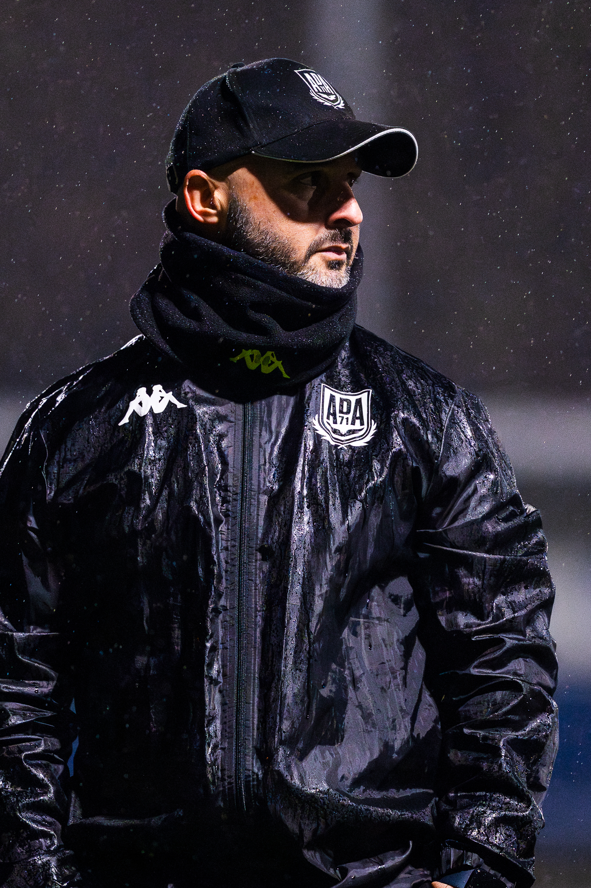
Entrenador Nacional Nivel III con más de 20 años de trayectoria vinculada al fútbol de competición y formación. Mi metodología se basa en la construcción de modelos de juego adaptativos y el liderazgo de proyectos de alta exigencia, habiendo logrado múltiples Campeonatos de España con la Selección de Madrid.
Mi perfil destaca por una visión tecnológica aplicada al campo. Soy Ingeniero Técnico en Informática y poseo un Máster en Big Data Deportivo, lo que me permite integrar el análisis de datos avanzado en la planificación táctica y el desarrollo individual del jugador.
Como Formador UEFA, me apasiona la docencia y la capacitación de nuevos técnicos, trasladando una identidad de juego basada en la disciplina táctica, el análisis de evidencias y la gestión armoniosa de grupos humanos.
AD Alcorcón
CDE Amistad Alcorcón
AD Alcobendas Levitt
ADC Parque Sureste
Madrid CFF
Real Federación de Fútbol de Madrid
Real Federación de Fútbol de Madrid
Real Federación de Fútbol de Madrid
Universidad Rey Juan Carlos · Móstoles
Big Data International Campus · Centro adscrito a la UCAM
Real Federacion Española de Fútbol
Análisis visual de comportamientos colectivos y modelos de juego implementados en competición oficial.
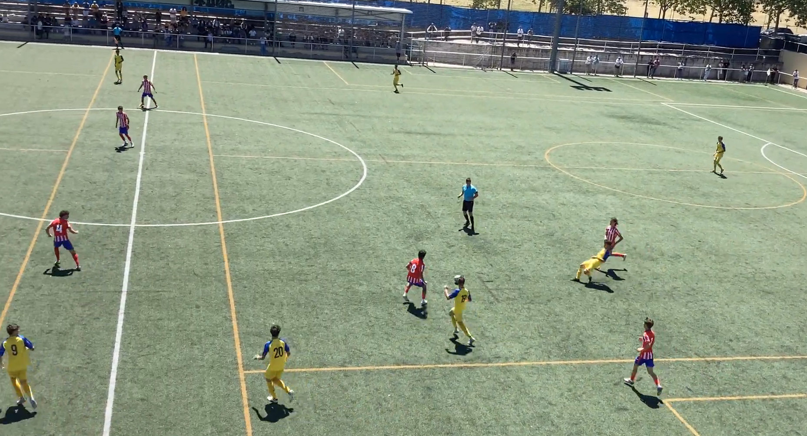
Ejemplo de salida de balón ante presión alta, buscando atraer y jugar con última linea, descargar y progresar por pasillo contrario.
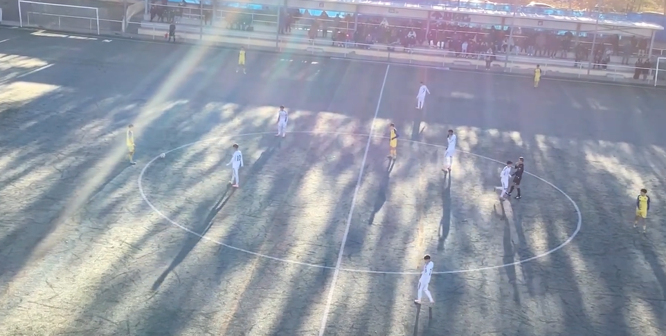
Manifestación de como progresar con cambio de posiciones (lateral dentro) para desajustar rival junto con progresión a área rival
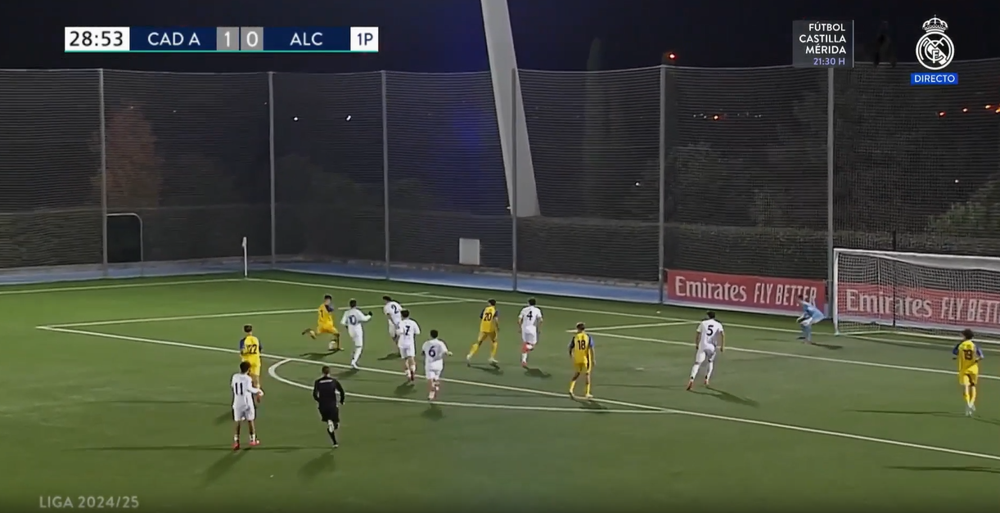
Gol protagonizado por los chicos del cadete A (generación 2009) de la AD Alcorcón aprovechando la inestabilidad del rival
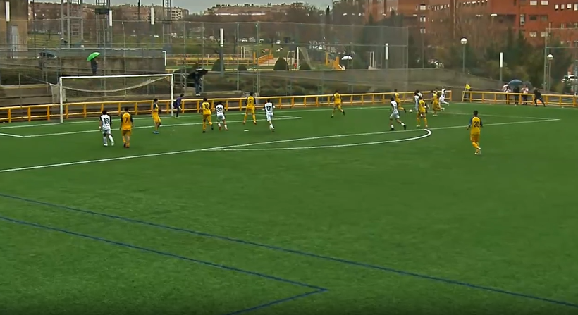
Comportamiento defensivo en área propia apreciando el gran valor que damos a los esfuerzos individuales y colectivos.
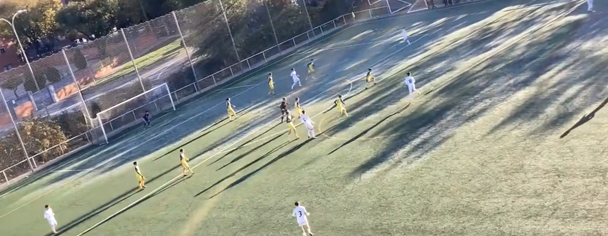
Comportamiento del bloque tras pérdida de posesión en campo rival manifestando el compromiso y permitiendo hacer ayudas defenisvas para defender el carril exterior. AD Alcorcón Sub16 (generación 2010)
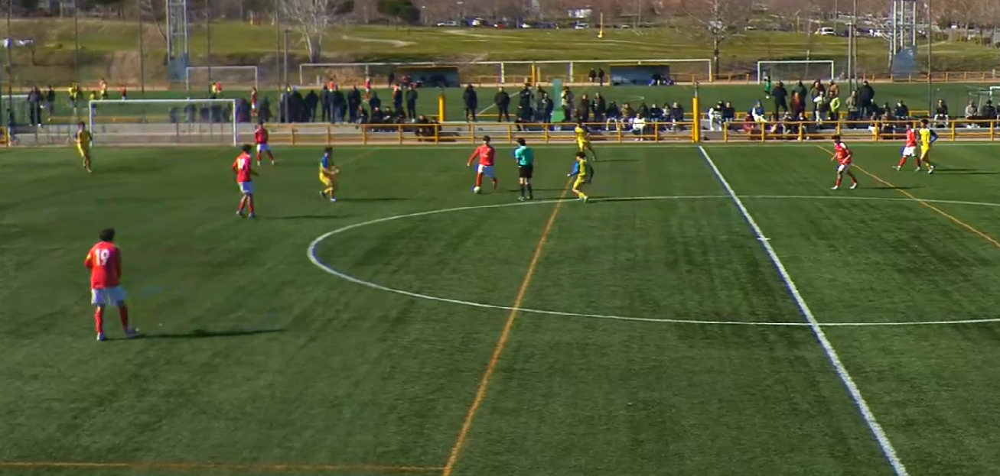
La rápida reacción tras perder la posesión permite recuperar el balón y atacar al rival en un momento de gran inestabilidad.
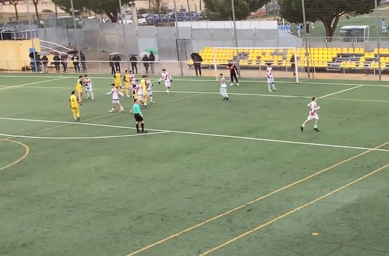
Diseño y ejecución de córner para finalización tras sacar en corto para aprovechar 2 contra 1.
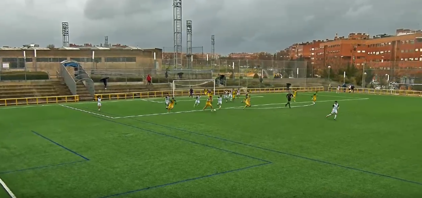
Una buena defensa permite transitar con éxito desplegandose con ambición
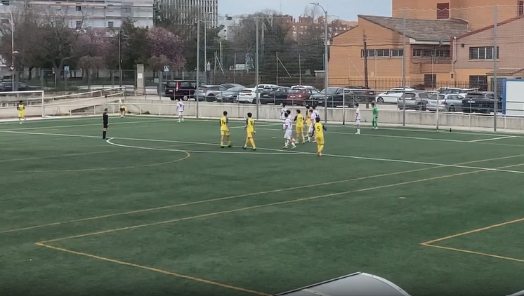
Diseño y ejecución de córner para finalización en segundo palo aprovechando bloqueos.
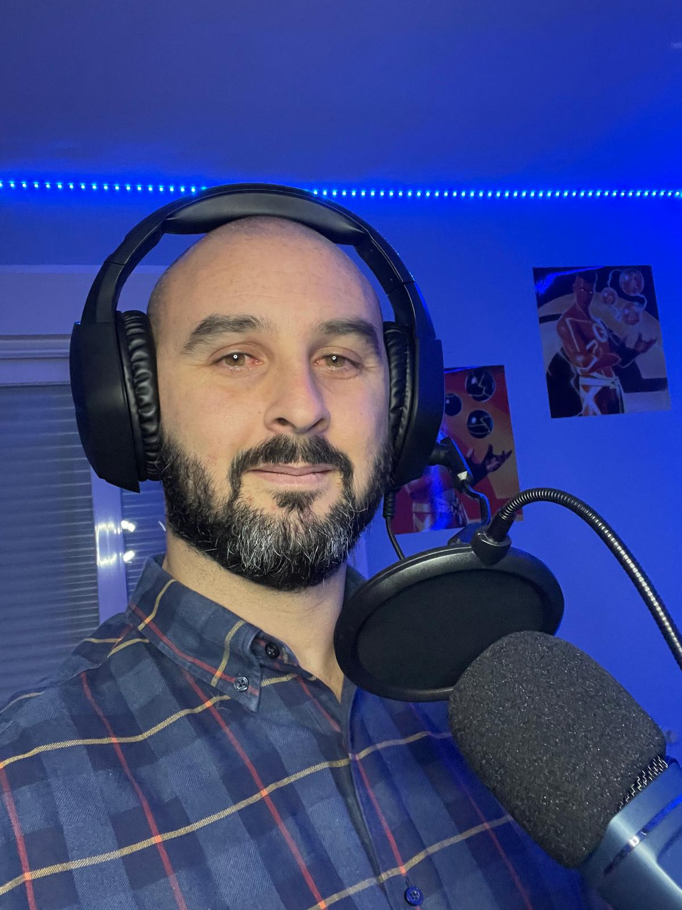
Participación en varios episodios de "Planeta Pequeño" donde se repasaban las temporadas de liga con el foco puesto en los entrenadores
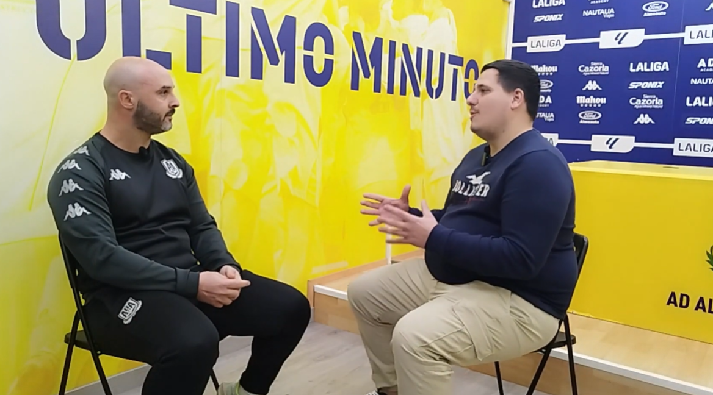
Canal dedicado a entrevistas a entrenadores. Vinieron a visitarnos en dos ocasiones
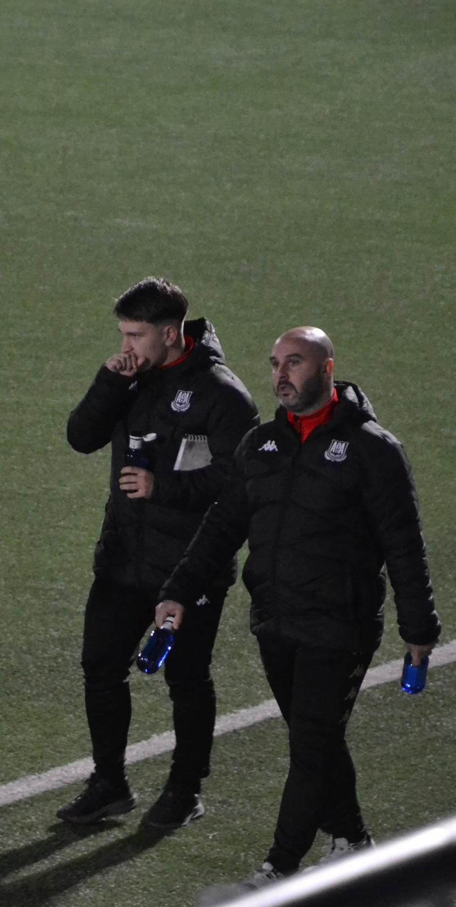
Blog de articulos relacionados con el fútbol. Participando como 'Firma Invitada' escribiendo articulos para el blog
Herramientas de videoanálisis, diseño de tareas, gestion de clubes y solidos conocimientos de programación.
Mi objetivo es desarrollar el club a todos los niveles durante mi estancia, mejorando a todos los que trabajen a nuestro alrededor. Creo firmemente que los mejores equipos se construye apoyándose en las buenas personas, un ambiente agradable, un buen trabajo en equipo, proactividad y una comunicación fluida.
Lo que dicen directores técnicos, coordinadores y compañeros sobre mi metodología y liderazgo.
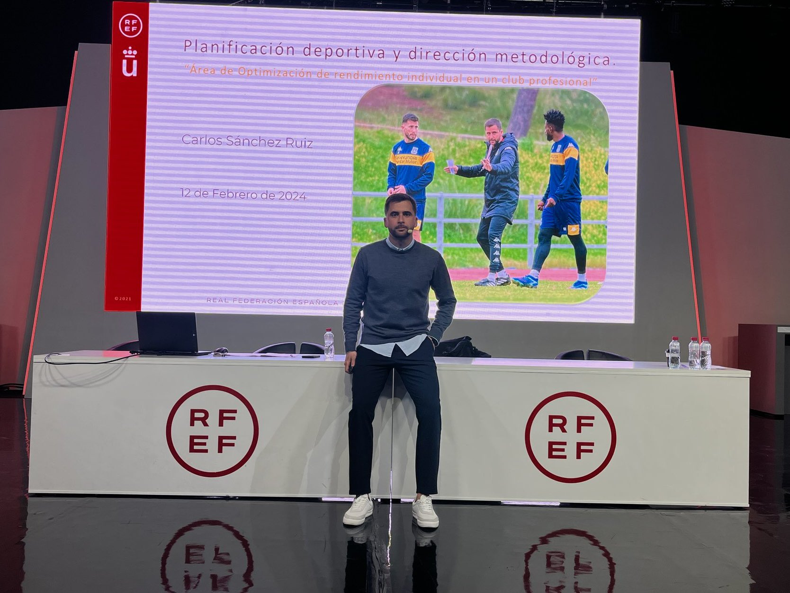
"Álex tiene una capacidad innata para detectar talento y potenciarlo mediante tareas diseñadas específicamente..."
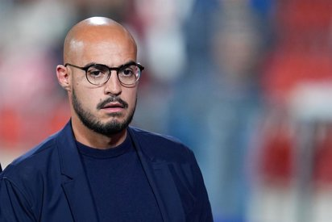
"Su meticulosidad en el análisis táctico fue clave para los éxitos obtenidos en los Campeonatos de España..."
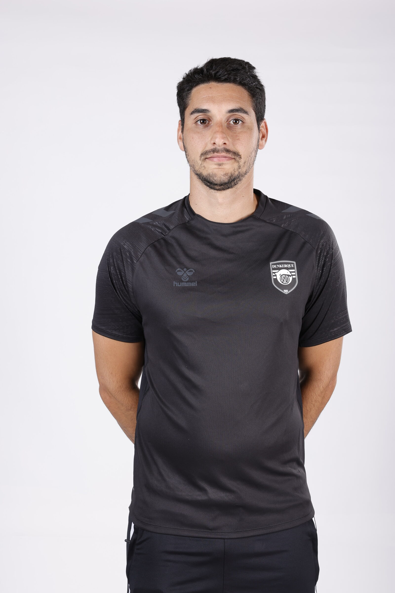
"Lideró la transformación de nuestra estructura formativa con una comunicación fluida y objetivos claros..."
"Como entrenador, sabe gestionar el vestuario en momentos de presión. Transmite seguridad y tiene las ideas claras..."
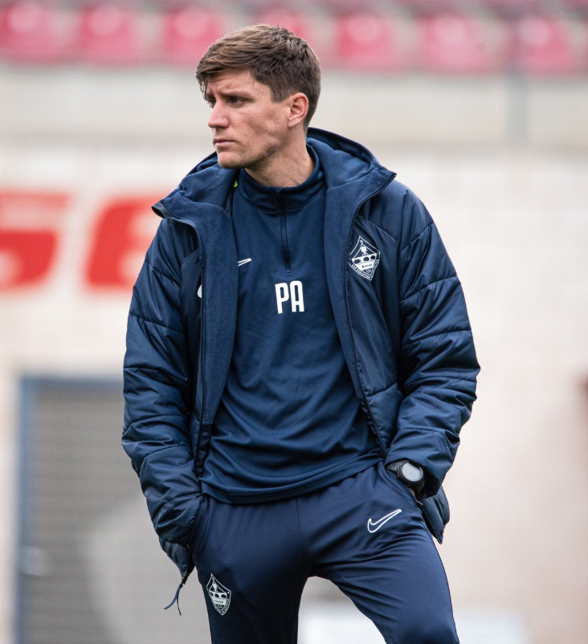
"Su visión del fútbol base es moderna y ambiciosa. No solo entrena jugadores, forma personas..."

"Su dominio de herramientas de Big Data y videoanálisis le permite tomar decisiones basadas en evidencias..."

"Es un formador nato. Su trabajo con los técnicos de la academia elevó el nivel competitivo..."
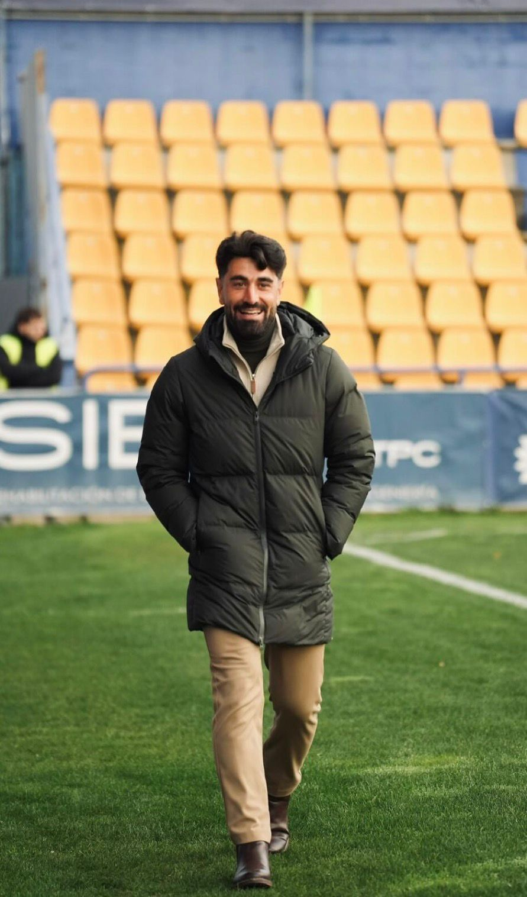
"Álex tiene una capacidad innata para detectar talento y potenciarlo..."

"Como formador UEFA, Álex destaca por hacer sencillo lo complejo. Sus tutorías son una masterclass..."